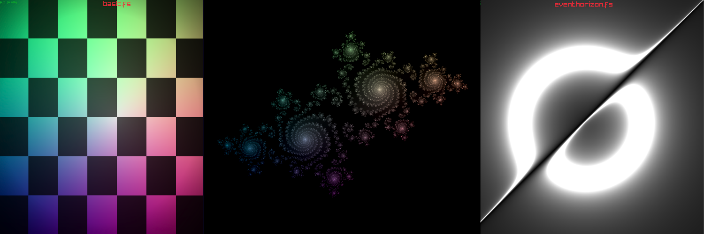
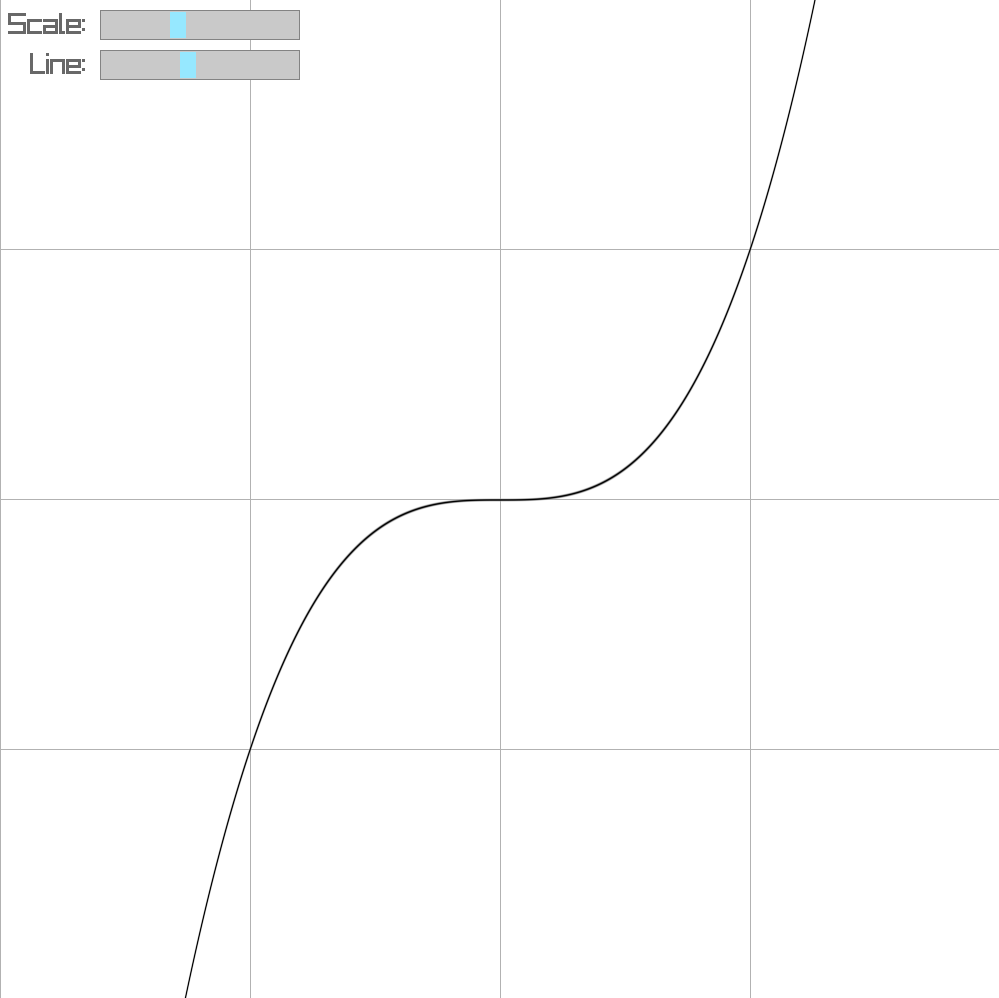
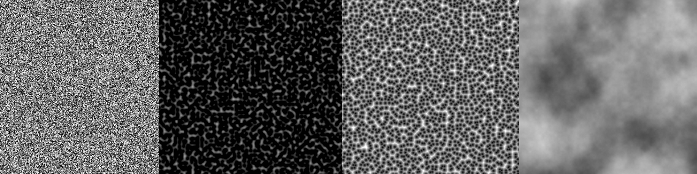

Learning Shader Programming
Shader programming always seemed like a deep rabbit hole—complex math, cryptic syntax, and GPU-specific behavior. I often tried, but never really got into that. When finally starting this project, that changed!
The first step was getting something, anything on the screen. Raylib makes this pretty straightforward with its clean API, so that's what I used. No use in pasting even more OpenGL Code to achieve the same result right?
The Basics
To start off I wanted to learn the basic mathematical functions and techniques to draw stuff to the screen.
Once I had a basic shader working, the next step was sending custom data from the CPU to the GPU. The first variable I passed was
time, using SetShaderValue() every frame. This opened the door to animations - just feeding in a steadily increasing float created moving gradients and patterns.float time = GetTime();
SetShaderValue(shader, shader.locs[SHADER_LOC_TIME], &time, SHADER_UNIFORM_FLOAT);
Now you can do some stuff that actually looks cool by just combining basic math functions with a cool color palette.

Apart from that I also rendered the Julia Set and a cool black hole (from a formula I found online).
Masks
After playing around with math-based shaders, I started experimenting with image masking - think GPU-accelerated image compositing, similar to what you’d find in GIMP or Photoshop.

This eventually became TruMasker a tool for fast and precise masking powered entirely by the GPU. The masking is done in a fragment shader, which makes it _extremely_ performant, even at high resolutions. And because it's all done on the GPU, I could keep a live WYSIWYG preview.
Graphs
As an experiment, I implemented a simple function plotter entirely within a fragment shader. The idea was to visualize mathematical functions directly on the GPU, allowing for real-time interaction and zooming.
The shader computes normalized coordinates (
uv), adjusts for aspect ratio, and uses a function f(x) along with its derivative fʼ(x) to determine where to draw. A smoothstep around the function curve produces a clean, antialiased line, with the thickness controlled by a uniform.
In this example,
I plotted f(x)= x^3, but any function can be substituted. Because all rendering is done on the GPU, it remains highly performant.As this only requires a function and its derivative I want to explore this further and dynamically generate a shader from a function entered by a user (and it's calculated derivative).
Game of Life
For another experiment, I implemented Conway's Game of Life entirely within a fragment shader. The shader operates on two swapped buffers—one for the current state and another for the next state. Each frame, the current buffer is processed to calculate the new grid configuration, which is then swapped for the next iteration.

Although this approach works and allows for real-time updates, it’s not highly optimized. The shader checks each cell’s neighbors and applies the Game of Life rules (e.g., underpopulation, overpopulation, and reproduction) to generate the next state. Despite the performance limitations, this method demonstrates the power of shaders for handling cellular automata.
Raymarching
I explored raymarching to render 3D scenes entirely through mathematical functions. Unlike traditional ray tracing, raymarching iteratively steps along a ray to detect intersections with objects. In this example, I used two spheres that move over time, blending between them with a smooth minimum function to achieve a smooth transition between objects.
The key components of the shader are as follows:
sd_spherecomputes the signed distance to a sphere.sminblends the distances of two objects, creating a smooth union of their shapes.raymarchtraces a ray by stepping through the scene, sampling the distance field at each step and checking for intersections.

The smooth transition between the spheres is achieved using the
smin function, which allows for a softer intersection between objects, giving a polished, visually appealing effect.Here's a quick breakdown of the process:
- The scene is rendered by casting rays from the camera (viewing origin) and stepping through space.
- For each ray, the shader computes the distance to objects using the signed distance function (
sd_sphere). - The final color is determined based on lighting calculations and the intersection points of the rays.
This method allows for creating complex scenes using only mathematical operations, making it a highly flexible and GPU-efficient way to render 3D objects.
Noise
Noise functions play a crucial role in creating natural-looking textures, patterns, and effects in shaders. In this exploration, I implemented a variety of noise functions, including White Noise, Perlin Noise, Voronoi Noise, and Fractal Brownian Motion (FBM), to generate visually appealing and complex effects.

White Noise
White noise is the simplest form of noise, providing random values at each point in space. It's useful for generating static or random-looking effects but lacks coherence over space or time. It can be implemented using simple random functions in GLSL.
Perlin Noise
Perlin noise is a smooth, coherent noise function often used in graphics for natural-looking textures and terrain generation. Unlike white noise, Perlin noise has continuity and a more organic feel, which makes it perfect for effects like cloud generation or water surfaces.
Voronoi Noise
Voronoi noise divides space into cells based on the distance to randomly distributed seed points. Each point is assigned a value depending on the nearest seed, creating patterns like cracks, cellular structures, or abstract geometric forms.
Fractal Brownian Motion (fBM)
fBM combines multiple layers of noise at different scales (octaves) to create more complex, fractal-like structures. By iterating over Perlin noise at various frequencies and amplitudes, fBM can simulate realistic textures like clouds, terrain, and other natural phenomena.
Domain Warping
To add extra complexity and visual appeal, Domain Warping is used. This technique warps the noise function's input space using another noise function, creating more chaotic and dynamic effects. By warping the coordinates used for Perlin or Voronoi noise, the resulting texture or pattern becomes more irregular and lifelike.

These noise techniques can be used to generate everything from basic textures to intricate, dynamic visuals like flowing water or organic surfaces. Combining them opens up a wealth of possibilities for creating rich, procedurally generated environments.
3D
I did started doing some basic 3D shading, but nothing worth writing a blog post about yet. Once I did some more progress on that I'll amend this post.As always all code can be found here